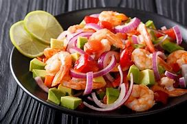

Ceviche de Camarão
Ingredientes
- 500g de camarões médios limpos e descascados
- 1 cebola roxa fatiada em rodelas finas
- 2 tomates sem sementes picados
- 1 pimentão vermelho picado
- 1 pimentão amarelo picado
- 1 pimentão verde picado
- 1/2 xícara de coentro fresco picado
- 1/2 xícara de suco de limão
- 1/2 xícara de suco de laranja
- Sal e pimenta-do-reino a gosto
- Pimenta dedo-de-moça picada a gosto
- 1 colher de sopa de azeite de oliva
Modo de Preparo
- Em uma tigela grande, misture os camarões, a cebola roxa, os tomates, os pimentões e o coentro.
- Adicione o suco de limão, o suco de laranja, o sal, a pimenta-do-reino e a pimenta dedo-de-moça. Misture bem.
- Regue com o azeite de oliva e misture novamente.
- Cubra a tigela com plástico filme e leve à geladeira por pelo menos 30 minutos, permitindo que os sabores se misturem e os camarões cozinhem no suco cítrico.
- Antes de servir, ajuste o tempero se necessário e decore com mais coentro fresco.
- Sirva gelado como entrada ou prato principal.